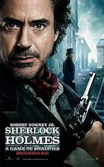
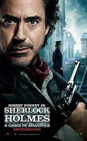
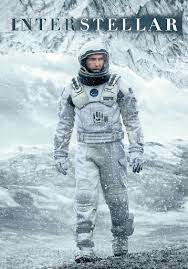
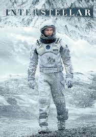

Séries e Filmes
 

 

Genero: Sitcom, comédia
Introdução: Jake Peralta é um
detetive brilhante e imaturo ao
mesmo tempo, que nunca
precisou se preocupar em respeitar as regras.
Genero: Ação, drama
Introdução: Watson está prestes a se casar com a sua amada Mary Morstan. Porém, a única coisa com
que ele não contava era que seu amigo Holmes apareceria
Genero: Mistério, drama
Introdução:Um assassinato no museu do Louvre em Paris e pistas enigmáticas em alguns dos quadros
mais famosos de Leonardo DaVinci levam à descoberta de um mistério religioso.
Genero: Ficção Cientifica, aventura
Introdução: As reservas naturais da Terra estão chegando ao fim e um grupo de astronautas recebe a
missão de verificar possíveis planetas para receberem a população mundial, possibilitando a continuação
da espécie.